LabSheets
Step-by-step instructions you bring into the lab, videos explain how to interpret each one
![A Google Sheets window titled TPcon6-P6 Experiment. The open tab is PCR. It carries a signature and date line, the heading TPcon6-P6: PCR (79), then protocol PrimeStar, program PG4K55 and a blank for the thermocycler. A source table lists three items with their construct, concentration and location: F# is P6libF at 10uM in Training1/A, R# is P6libR at 10uM in Training1/B, T# is pTP1 at dil20x in Training1/C. A samples table gives sample 79 as primer1 F#, primer2 R#, template T#, product 3583 bp. The reaction begins 32 uL ddH2O. Tabs along the bottom read Entry, Construction, Samples, PCR, Gel, ZymoAssembly.](img/09-labsheet.png)
Step-by-step instructions you bring into the lab, videos explain how to interpret each one
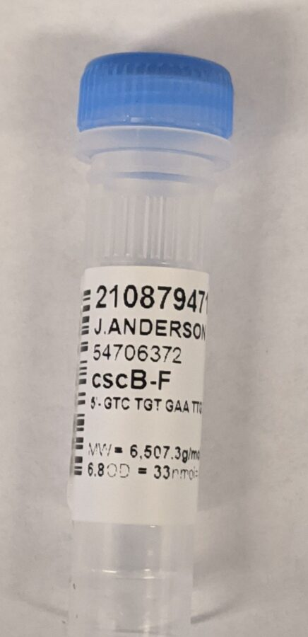
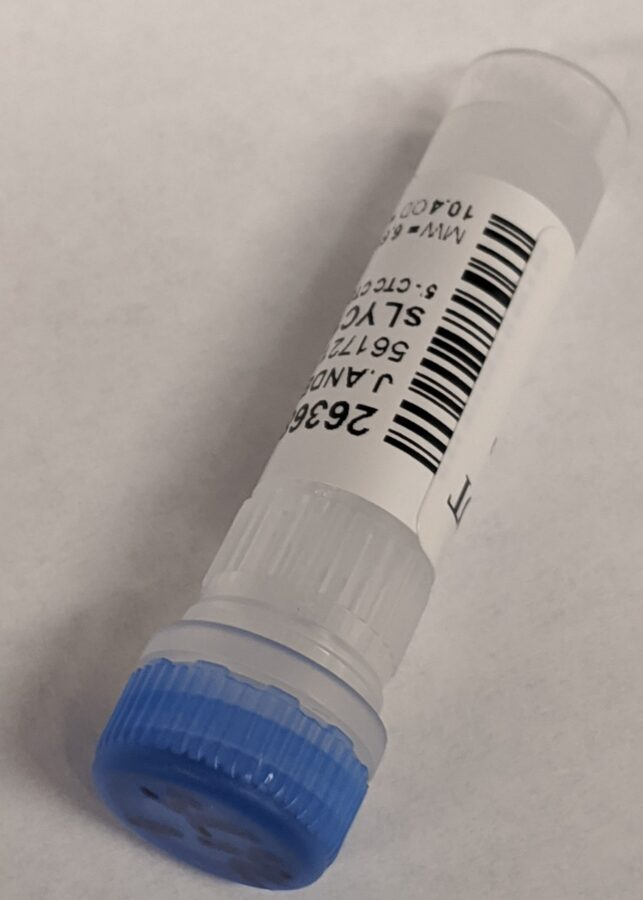
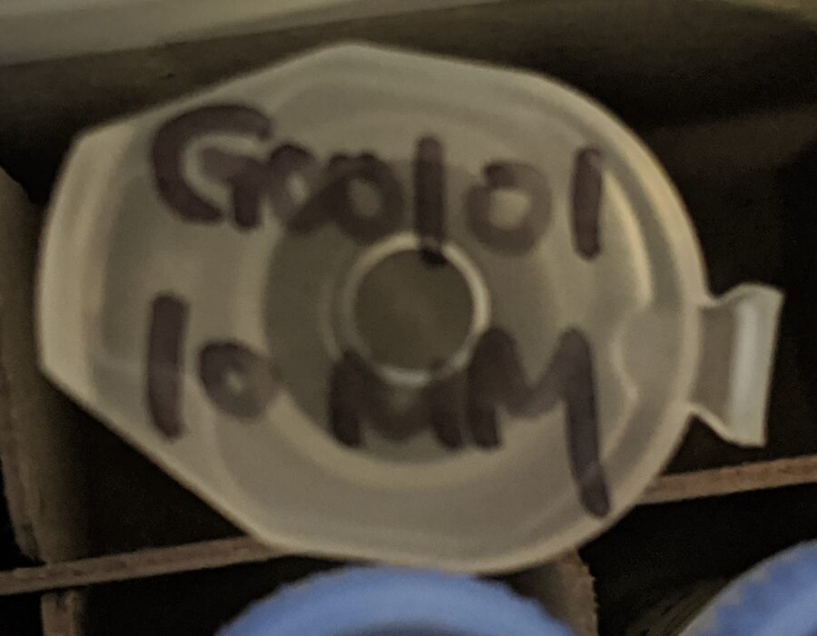
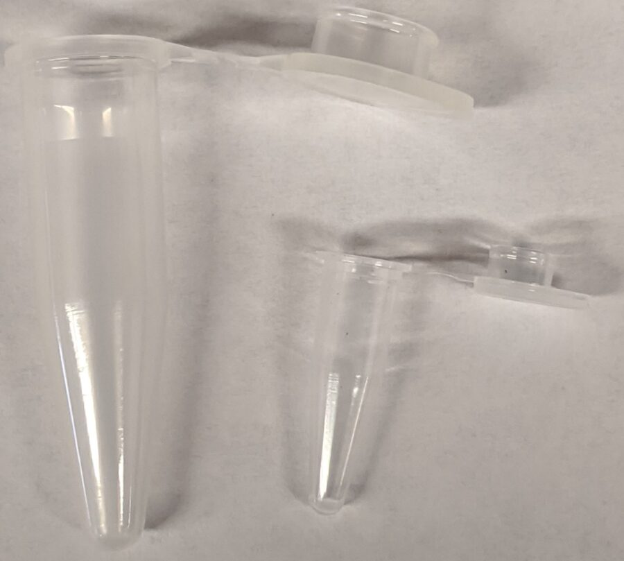
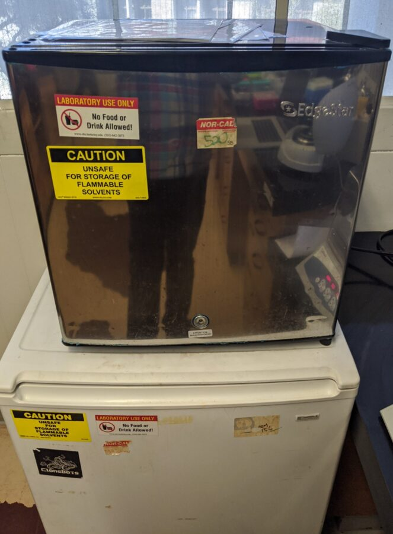
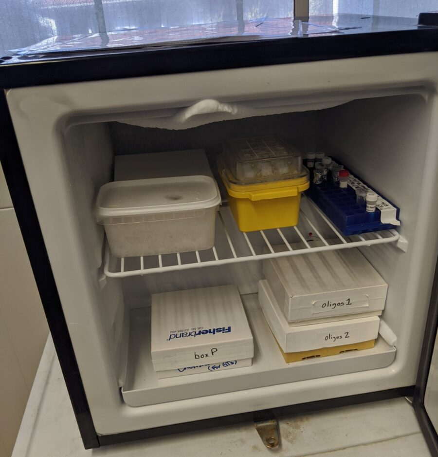
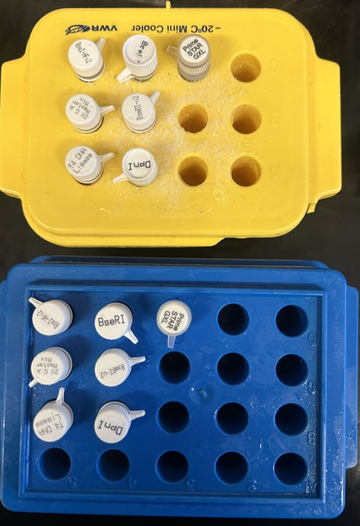
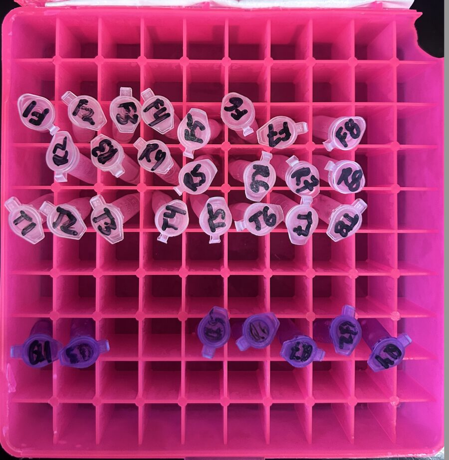
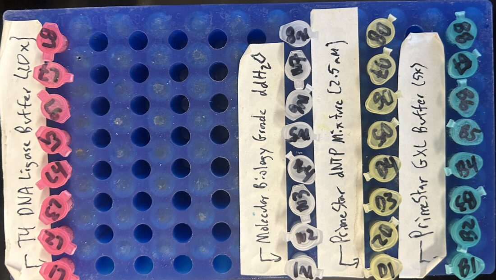
ddH2O
Buffer
dNTPs
Oligo1 (10 uM)
Oligo2 (10 uM)
Template (dil20x)
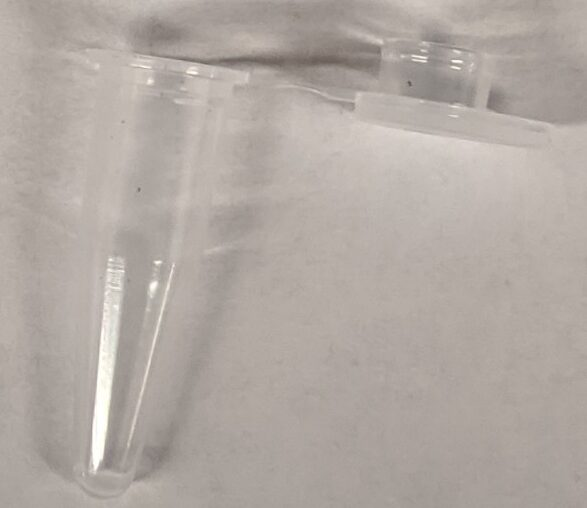
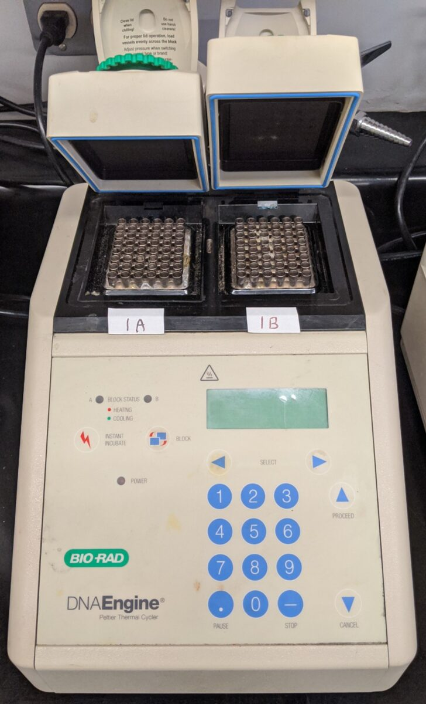
The LabSheet will tell you which polymerase and which program to run
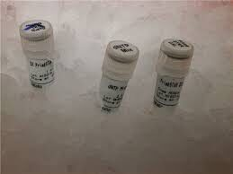
Set up the following reaction in a PCR tube, in the following order:
32 uL ddH20 10 uL 5X PrimeSTAR GXL Buffer 4 uL dNTP Mixture (2.5 mM each) 1 uL 10uM primer 1 1 uL 10uM primer 2 1 uL dil20x plasmid template 1 uL PrimeSTAR GXL DNA Polymerase
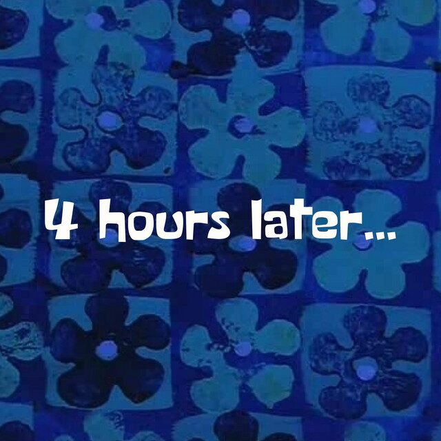
(or later)
A time-passes card: a blue batik print lettered 4 hours later, with the words or later added beneath it in brackets.